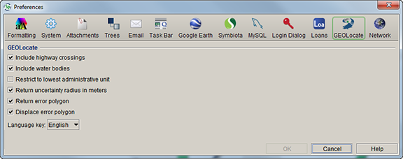

GEOLocate Preferences
GEOLocate Preferences
- For Mac: Choose Specify > Preferences > GEOLocate.
- For Windows and Linux: Choose Edit > Preferences > GEOLocate.

GEOLocate Preference
The GEOLocate preference allows features in GEOLocate to be turned on or off when using it to georeference data from Specify.
- Include Highway Crossings - When enabled, GEOLocate will search the locality string for bridge crossing information and attempt to pinpoint the locality at the intersection of the river and highway. This feature only works for U.S. localities and requires county data.
- Include Water Bodies - When enabled, GEOLocate will search the locality string for the names of rivers and streams. If one is found, GEOLocate will snap the calculated points to the nearest point on the waterbody. This feature only works for U.S. localities and requires county data.
- Restrict to Lowest Administrative Unit - When enabled limits results found by GEOLocate to points within the lowest administrative unit in the locality description.
- Return Uncertainty Radius in Meters - When enabled GEOLocate will calculate and return the uncertainty radius, if one exists.
- Return Error Polygon - When enabled GEOLocate will calculate and return the error polygon, if one exists.
- Displace Error Polygon - When enabled GEOLocate will use any distance value referred to in the Locality Description to displace the GEOLocate Error Polygon value (if one exists). For instance, if 10 miles North of Lawrence is in the Locality Description, but the Error Polygon in GEOLocate is a 30 mile radius around the center of Lawrence, GEOLocate will move the 30 mile radius 10 miles North of the center of Lawrence.
- Use GEOLocate's Map Server - When enabled GEOLocate's map server is used.
- Language Key - tells GEOLocate what language to use to interpret the Locality Description.